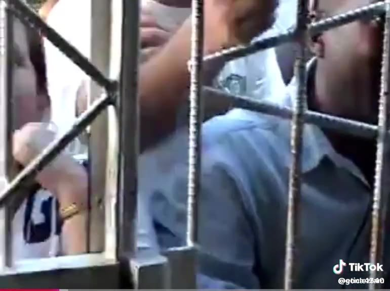

Bienvenido
CubaLibre51 es una página para hablar de la anexión de Cuba a Estados Unidos. No es un lema. Es una pregunta que se puede estudiar: qué es anexar, cómo lo ha hecho Estados Unidos y por qué Cuba debería formar parte de la Unión. A unas 90 millas de Florida, la isla ha sido república desde 1902 y no ha tenido un estado de derecho estable. La anexión, para quienes la defendemos, es la forma de que la ley impida que otro dictador herede el país.
También está la Cuba de ahora. Hay presos políticos por pensar distinto, por salir a la calle o por decirlo en un video. Gente que pidió electricidad, o que gritó libertad, y terminó con años de condena. La libre expresión, en la isla, se paga con cárcel y con la familia afuera. Sus expedientes están aquí para que el nombre no se pierda.
Y están los que los reprimen. No es un sistema sin cara. Hay jefes de cuartel, delegados del MININT y oficiales que salen en los videos: los que disparan para cortar una protesta, los que detienen al día siguiente, los que convierten un caldero en un expediente. En Antilla, el 19 de mayo de 2026, una marcha por el apagón acabó en disparos y en detenciones. Esos nombres van en Represores, como acusación, para que no se escondan detrás del uniforme.
Videos

▶︎